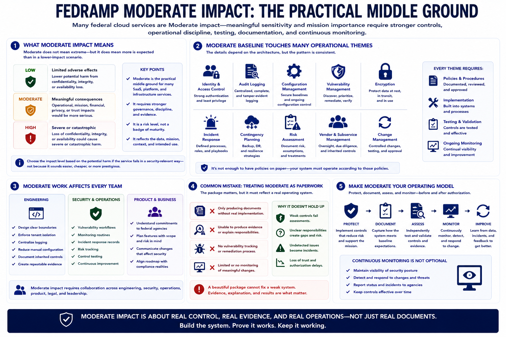

Moderate Baseline Concepts
Connecting to LMS... Progress: in progress

Narration
Moderate impact is central to many FedRAMP conversations because many federal cloud services process information or support use cases with meaningful sensitivity or mission importance. Moderate does not mean extreme, but it does mean the service needs stronger governance, implementation discipline, testing, documentation, and ongoing monitoring than a lower-impact scenario. It is often the practical middle ground for federal SaaS, platform, and infrastructure offerings.
A Moderate baseline expectation touches many operational themes: identity and access control, audit logging, configuration management, vulnerability handling, encryption, incident response, contingency planning, risk assessment, vendor operations, and change management. The details depend on the architecture, but the pattern is consistent. The provider must be able to show not only that policies exist, but that the system operates according to those policies.
Moderate work affects engineering and operations directly. Engineers may need to design clearer boundaries, strengthen tenant separation, centralize logging, reduce manual configuration, document inherited controls, and create repeatable evidence. Security teams need vulnerability workflows, monitoring routines, incident response records, and risk tracking. Product teams need to understand what commitments are being made to agencies and what future features may change scope.
A common mistake is treating Moderate as paperwork. The package matters, but the package should reflect a real system. If the service cannot produce evidence, cannot explain responsibilities, cannot track vulnerabilities, or cannot monitor meaningful changes, the documentation will not hold up well. The baseline should become an operating model: protect the service, document honestly, assess the controls, and keep monitoring after authorization.